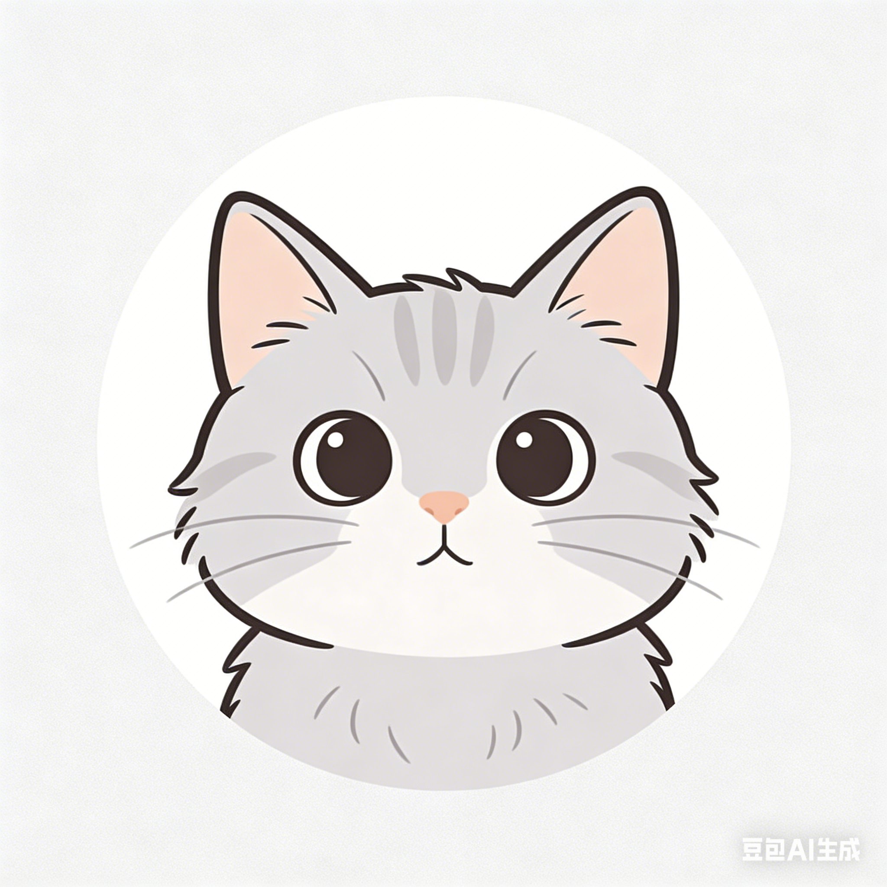

关于我

张俊豪 · Zhang Junhao
🎓 中山大学统计学院 · 统计学硕士研究生（2025 级）
📍 广州，广东
📧 junhao@example.com
🐙 github.com/junhaozhang
“数据是新时代的语言，统计是读懂世界的钥匙。”
🎓 教育经历
中山大学 · 统计学院
统计学 硕士研究生
📅 2025.09 — 至今 · 广州
- 研究方向：贝叶斯统计与机器学习
- 参与导师课题：高维数据的变量选择方法研究
- 主修课程：高等统计推断、随机过程、统计计算
华南师范大学 · 数学与统计学院
统计学 学士学位
📅 2021.09 — 2025.06 · 广州
- 毕业论文：《基于 LASSO 的高维线性模型变量选择研究》（优秀论文）
- 专业排名：前 10%
- 获得国家励志奖学金（2022、2023 年度）
💼 实习 / 科研经历
数据分析实习生 · 广州某科技有限公司
📅 2024.07 — 2024.09
- 参与用户行为数据清洗与分析，处理百万级数据
- 使用 Python (pandas, sklearn) 构建用户流失预测模型，AUC 达 0.87
- 撰写数据分析报告，辅助产品决策
本科生科研项目 · 华南师范大学
📅 2023.03 — 2024.06
- 主持省级大学生创新创业训练项目
- 研究广州市空气质量时间序列预测，基于 ARIMA-LSTM 混合模型
- 项目结题评级：优秀
🛠️ 技能清单
编程语言
专业技能
| 类别 | 技能 |
|---|---|
| 统计方法 | 线性/广义线性模型、贝叶斯推断、时间序列、生存分析 |
| 机器学习 | 随机森林、XGBoost、神经网络、LASSO/Ridge 回归 |
| 数据可视化 | ggplot2、matplotlib、Plotly、Tableau |
| 工具平台 | Git、RStudio、Jupyter、VS Code、Quarto |
🏆 荣誉奖项
- 🥉 2025 全国大学生统计建模大赛 三等奖
- 🏅 2024 广东省大学生数学建模竞赛 二等奖
- 📜 2023 国家励志奖学金
- 📜 2022 国家励志奖学金
- 🎓 2025 优秀本科毕业论文
📚 语言能力
| 语言 | 水平 |
|---|---|
| 普通话 | 母语 |
| 粤语 | 流利 |
| 英语 | CET-6（562分）· 可阅读英文文献 |
🌱 兴趣爱好
📸 摄影 — 喜欢用镜头记录生活瞬间，尤其偏爱城市街拍与风光摄影
🥾 徒步 — 曾完成广东多条徒步线路，享受户外与自然的宁静
📖 阅读 — 偏爱科普与社科类书籍，近期在读《统计思维》《贫穷的本质》
🎮 编程 — 热衷于用代码解决有趣的小问题，偶尔参加 Kaggle 比赛